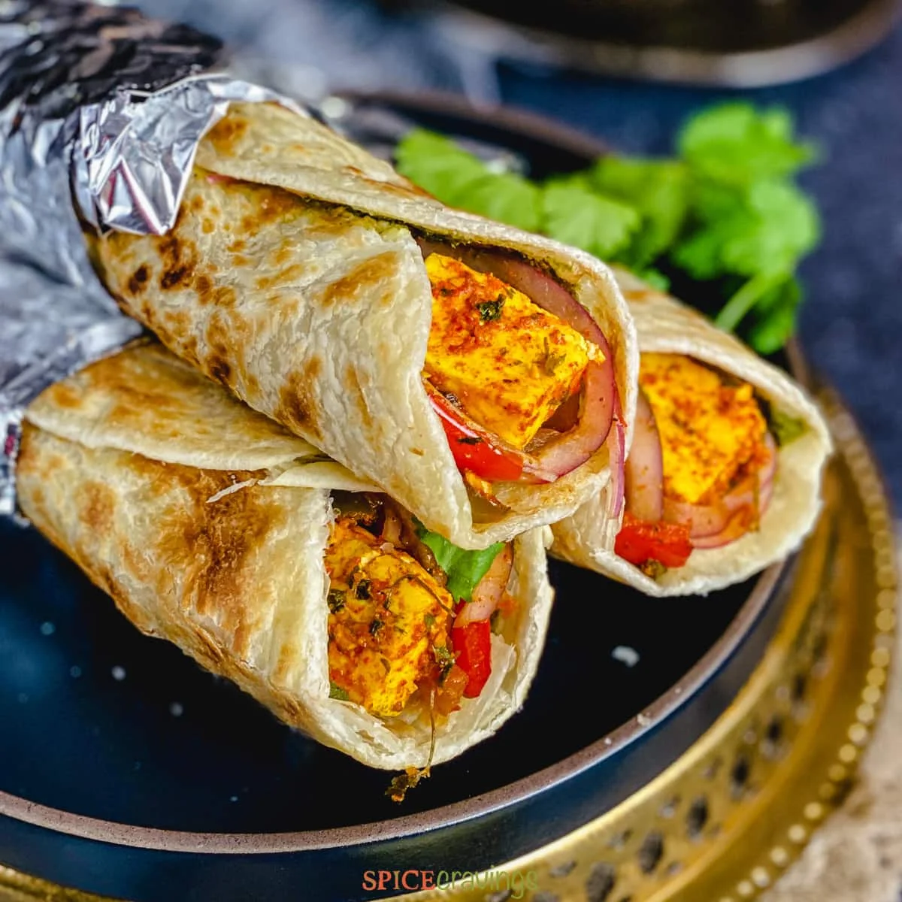
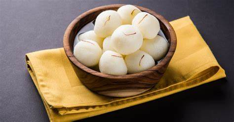
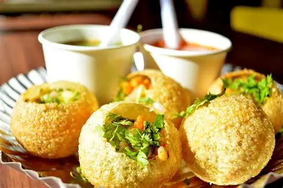
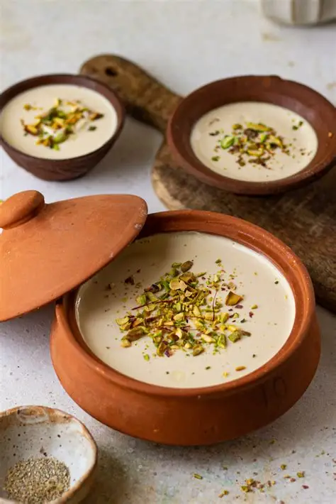
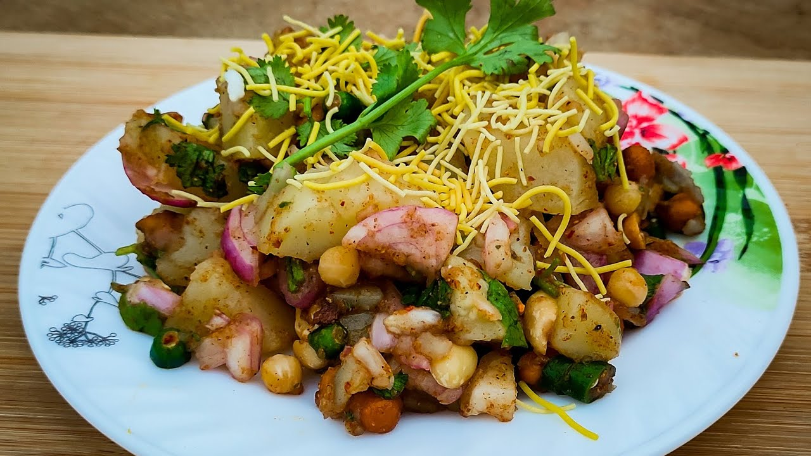
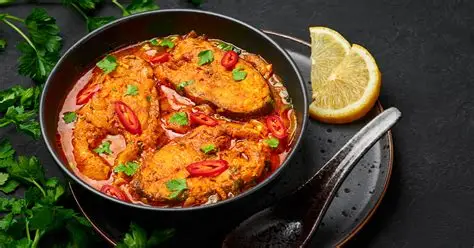

Kathi Roll is a popular Kolkata street food consisting of spiced meat or vegetables wrapped in a flaky paratha. It is flavorful, easy to eat, and loved as a quick snack by locals and tourists alike.

Rosogolla is a famous Bengali sweet made from soft, spongy chhena balls soaked in sugar syrup. Delicately sweet and juicy, it is a beloved dessert in Kolkata and across India.

puchka is Kolkata’s version of Pani Puri, consisting of crispy hollow puris filled with spicy, tangy tamarind water and mashed potatoes. It is a tangy, flavorful, and much-loved street snack.

Mishti Doi is a traditional Bengali sweetened yogurt, creamy and slightly caramelized. Rich and flavorful, it is a popular dessert in Kolkata.

Aloo Chaat is a popular Kolkata street snack made with crispy fried potatoes tossed in tangy and spicy chutneys. It is flavorful, crunchy, and loved by people of all ages.

Macher Jhol is a traditional Bengali fish curry made with fresh fish, potatoes, and aromatic spices. Light, flavorful, and comforting, it is usually served hot with steamed rice.